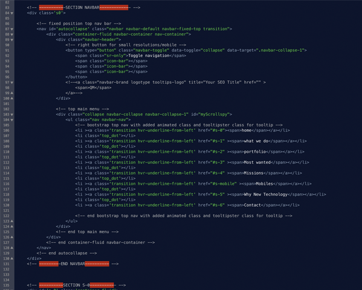

“Agency And Developers Landing Page” Documentation by “wordica” v1.0
“Agency And Developers Landing Page”
Created: 07/01/2016
By: Wordica
Email: info@wordica.net
Thank you for purchasing my theme. If you have any questions that are beyond the scope of this help file, please feel free to email via my user page contact form or email. Thanks so much!
Table of Contents
A) HTML Structure - top
This theme is a full width responsive layout build on Bootstrap 3.3.6. All HTML sections are commented like on picture below. If You want to change some sections, check comment and find behavior in style.css,media.css,navbar.css for that section and div
If you would like to edit the color, font, or style of any elements in one of these columns, you would do the following:
s3-title {
color: #someColor;
}
If you find that your new style is not overriding, it is most likely because of a specificity problem. Scroll down in your CSS file and make sure that there isn't a similar style that has more weight.
B) CSS Files and Structure - top
- style.css - all styles for page
- owl* - styles for owl carousel plugin https://github.com/OwlFonk/OwlCarousel
- media.css - styles for media query (responsive behavior)
- navbar.css - elements for top navbar
- navbar.css - elements for hovers effects
- colorbox.css - css for colorbox plugin for image popup in section with products http://www.jacklmoore.com/colorbox/
- animate.css - animations for some elements http://daneden.github.io/animate.css/ ( use by adding class='animated fadeIn' or some else class from link. Class delay1,2,3,4,5,6 are in media.css and are responsive for how long animation should wait after page load )
I'm using few CSS files in this theme. The main one is style.css and navbar.css and media.css ( responsive ) where are set all behavior for template. Rest of css files are responsible for added plugins behavior.
Structure of style.css is very similar to HTML file and is commented like:
/* === SECTION A === */
some code
/* === SECTION B === */
some code
/* === SECTION C === */
some code
/* === TITLES BOOTSTRAP === */
some code
etc, etc.
FOR EXAMPLE YOU HAVE CODE IN MASONRY LAYOUT AND SOME OF THEM HAVE 'see it online button' and some not
THIS IS CODE WITHOUT BUTTON:

And here You have code with 'see it online button'.
So Just add predefined class for 'item_desc' class and button will be visible
- then of course set href to redired to you work.
If you would like to edit a specific section of the site, simply find the appropriate label in the CSS file, and then scroll down until you find the appropriate style that needs to be edited.
MAILS AND PHONE SUBMIT
- Contact form is very simple PHP contact form that use defaut settings of Your server/hosting and try to send file by it. When You open file "mails.php" You will find line like this " $to = 'seo_poczta@wp.pl'; " it is adress to which emails from contact form will be sended to - please put there Your own email adress.
- Phone submit is very simple PHP contact form that use PHP script to write number to "formdata.txt" file on Your server. If You want to change file name ( recomended ) create new TXT file, give it permission CHMOD to 777 and go to submit_phone.php where You will change default file name where numbers will be written.
- Newsletter submit is very simple PHP contact form that use PHP script to write number to "formnewsletter.txt" file on Your server. If You want to change file name ( recomended ) create new TXT file, give it permission CHMOD to 777 and go to submit_newsletter.php where You will change default file name where numbers will be written.
C) JavaScript - top
This theme have one mail.js file. Every plugins used in this theme is initialized in here.
- main.js
Main.js is commented so check it to know how it works - every plugin have comment with link to author page with full documentation
E) Sources and Credits - top
I've used the following images, icons or other files as listed.
- IMAGES on site are free images for commercial use from - https://unsplash.com/
- ANIMATE.css - css animations http://daneden.github.io/animate.css/
- NOTY plugin - plugin for notifications http://ned.im/noty/
- VALIDATE plugin https://github.com/chriso/validator.js
- OWL CAROUSEL - styles for OWL jquery plugin http://owlgraphic.com/owlcarousel/
- ONE PAGE NAV plugin - plugin for scroll smooth to sections when click on section in top menu - http://github.com/davist11/jQuery-One-Page-Nav
- COLORBOX plugin for images preview in portfolio http://www.jacklmoore.com/colorbox/
- MOCKUPS - included 1 free mockups ( iphone image ) http://p-px.com/iPhone-6-Plus-3-4viewsPSD/
- LOGOTYPE - freepik.com Designed by Freepik
- COLORBOX plugin for images preview in portfolio http://www.jacklmoore.com/colorbox/
- CHARTS.JS plugin for jquery chart canvas http://www.chartjs.org/
- PARTICLE BACKGROUND EFFECT - in V2 version top page https://github.com/jnicol/particleground
- VIDEOS - are free to use for commercial purpose http://www.videvo.net/video/working-on-laptop-2/3518
- IMAGES IN PORTFOLIO - free for commercial use from http://freebiesbug.com/
Once again, thank you so much for purchasing this theme. As I said at the beginning, I'd be glad to help you if you have any questions relating to this theme. No guarantees, but I'll do my best to assist.
Michal Duliba